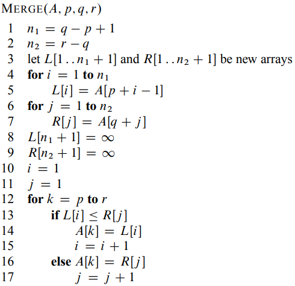
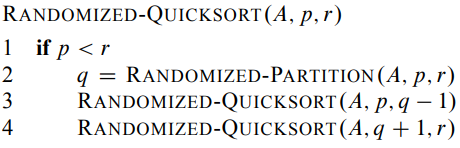

Realizada en Javascript. Recuerde abrir la consola para ver especificamente el código.
Entrada:Una lista de números separados por coma. Se puede generar una lista con n números al azar con el siguiente boton:
Algoritmo |
Descripcion del algoritmo |
Pseudocódigo |
Fuente bibliográfica |
|---|---|---|---|
| Un algoritmo de ordenacion simple que inserta el número donde deberia ir ordenado y reacomoda la posicion de todos los demas, similar a como ordenamos los humanos por ejemplo una baraja de cartas. Tiene tiempo de ejecución \( T(n) = O(n^2) \). |
Thomas H. Cormen, C. (2001). Introduction to algorithms (p. 18). The MIT Press. |
||
| Este algoritmo busca el elemento mas chico y lo acomoda al inicio, y continua ordenando los demas elementos similarmente pero con el inicio siendo después el número acomodado anterior. Tiene tiempo de ejecución \( T(n) = \Theta(n^2) \). |
% This algorithm is mine
\begin{algorithm}
\caption{SELECTION-SORT(A)}
\begin{algorithmic}
\FOR{$i \gets 1 $ \TO $length[A] -1$}
\STATE $key \gets i$
\STATE $min \gets A[i]$
\FOR{$j \gets i+1 $ \TO $length[A]$}
\IF{$A[j] < min$}
\STATE $key \gets j$
\STATE $min \gets A[j]$
\ENDIF
\ENDFOR
\STATE $min \gets A[i]$ %min usado como valor temporal
\STATE $A[i] \gets A[j]$ % para intercambiar
\STATE $A[j] \gets min$
\ENDFOR
\RETURN x
\end{algorithmic}
\end{algorithm}
|
Algoritmo creado por ser mencionado como problema en el Cormen
Thomas H. Cormen, C. (2001). Introduction to algorithms (p. 29). The MIT Press. |
|
| Se ordena usando la estrategia divide y venceras, donde separa el problema de ordenar en ordenar conjuntos mas pequeños (MERGE-SORT) y luego los ordena todos juntos (MERGE). Tiene tiempo de ejecución \( T(n) = \Theta (n \lg n) \). |  |
Thomas H. Cormen, C. (2001). Introduction to algorithms (p. 34). The MIT Press. |
|
| Aqui se acomodan los números en una estructura de arbol que luego permite reordenarlos, es una estrategia similar a dividir y vencer por separar el problema. A pesar de 3 los algoritmos que necesita tiene tiempo de ejecución \( T(n) = O (n \lg n) \). |
En órden:
Thomas H. Cormen, C. (2001). Introduction to algorithms (p. 154). The MIT Press. Thomas H. Cormen, C. (2001). Introduction to algorithms (p. 157). The MIT Press. Thomas H. Cormen, C. (2001). Introduction to algorithms (p. 160). The MIT Press. |
||
| Usa la estrategia de dividir y vencer separando en particiones el problema. Tiene tiempo de ejecución \( T(n) = \Theta (n^2) \) en el peor caso, pero si logra dividir en partes iguales tiene tiempo \( T(n) = \Theta (n \lg n) \) . |
Thomas H. Cormen, C. (2001). Introduction to algorithms (p. 171). The MIT Press. |
||
| Mejora con probabilidades el caso de Quicksort para que en promedio tenga tiempo de ejecución \( T(n) = \Theta (n \lg n) \). |  |
Thomas H. Cormen, C. (2001). Introduction to algorithms (p. 179). The MIT Press. |
|
| Ordena los números en base a que tan repetidos son (su frecuencia), lo que lo vuelve muy util si los números son naturales del 0 a \( k \). Cumpliendo esto tiene tiempo de ejecución \( T(n) = \Theta (n + k) \). |
Thomas H. Cormen, C. (2001). Introduction to algorithms (p. 195). The MIT Press. |
||
| Aqui ordena en base a los dígitos de los números, por lo que requiere de un algoritmo auxiliar que sea "estable" (que no cambie el orden de números si hay empates), tambien supone que cada número es constante \( \Theta (1) \) y que es natural. Cumpliendo esto tiene tiempo de ejecución \( T(n) = \Theta (n) \). Usamos Counting Sort en esta implementación. |
Thomas H. Cormen, C. (2001). Introduction to algorithms (p. 198). The MIT Press. |
El tiempo que tardó en ordenar el algoritmo seleccionado y la lista de números ya ordenada.